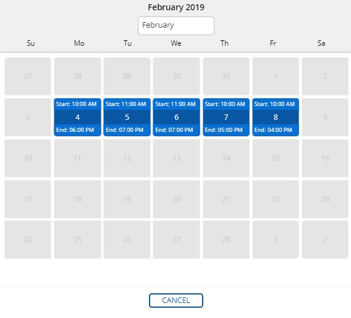
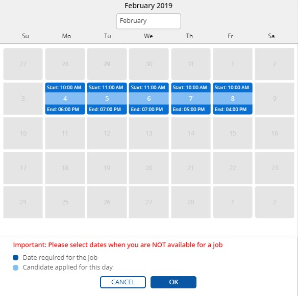

Complex. Usually, complex posting is used if a doctor needs a professional for
more than one day and simple and weekly patterns cannot be applied.
Navigate to Temporary Job at
Assignment.
Select an Assignment in Active
Status.
Click on APPLY button.

A user can view a required date for a job by clicking SHOW IN
CALENDAR button.
Note: Depending on posting type (simple, weekly, complex) – different views of
calendars are shown.
Click SHOW IN CALENDAR button in the Dates
required for the job section.
For example, a dental office requires a professional for Monday, Tueday,
Wednesday, Thursday and Friday. However start and end of job are different for
days of a week.

Note:SHOW IN CALENDAR dialog in the Dates
required for the job shows only dates and time (start, end).
A professional cannot select at this dialog any options.
or
SHOW IN CALENDAR button in the
Selection Dates section.
Note: Please select dates when you are NOT available for a job.
For example, a professional is not able to work on Thursday and Friday, but
other days of a week suit a candidate.
Select Thursday
and Friday when a user is NOT available for a
job.